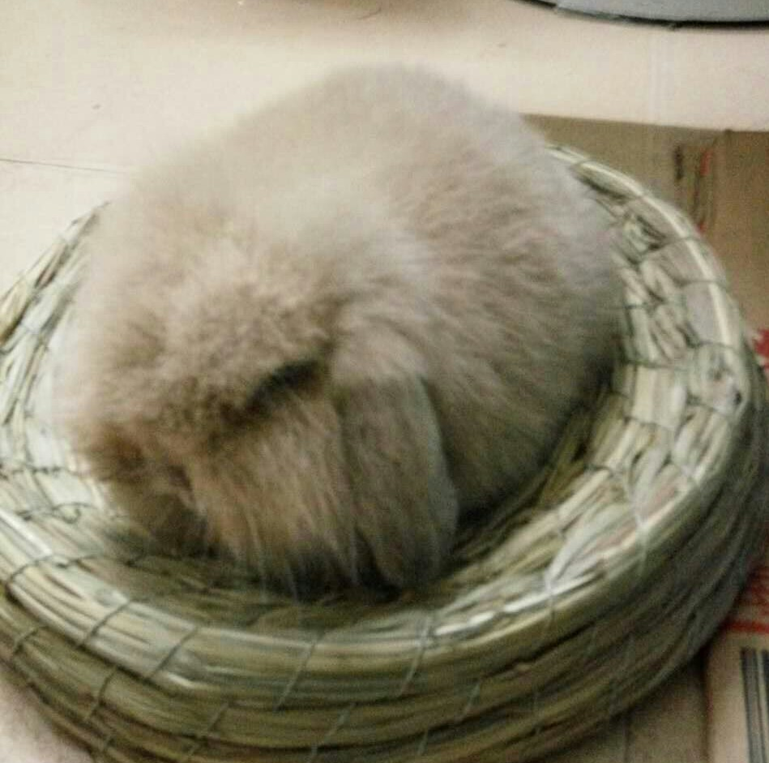

在花鸟鱼虫市场纠结要不要带一只小兔子回家的时候见到了它，好安静的趴在笼子上面，经过了一天都不知给多少人摸过它了。
等我蹲下摸着它的毛毛，小耳朵，就下决定了！！买！！走！！带回家！！！
拿出花鸟鱼虫市场之后，在阳光下才看清楚它的毛毛是黄色的，好萌~
哎呀，我的小心脏啊。带回家之后它就缩在一团，就是一个小毛团啊~刚到家里不熟悉环境，一开始还是乖乖的待在窝里，直到它踏出了第一步，知道家里都是它的地盘就开始撒腿就跑。没关系，你喜欢，谁叫你可爱~你爱咋就咋~
带回家养了两个月左右，变大只了~还是好可爱滴~
再后来一点，来张正面照。这是小兔子第一次换毛前，毛毛都超蓬松~换毛前围脖和脸蛋的毛毛是白色滴，成功换毛之后就变成黄色的了。
现在有它陪着我已经一年多了，它会要我抱，会撒娇，会舔人，会在家里活蹦乱跳，我走到哪跟到哪。喂它吃牧草吃着吃着还舔你手指，可乖可可爱了~它兔粮牧草没白吃，我也没白铲屎~棒！！